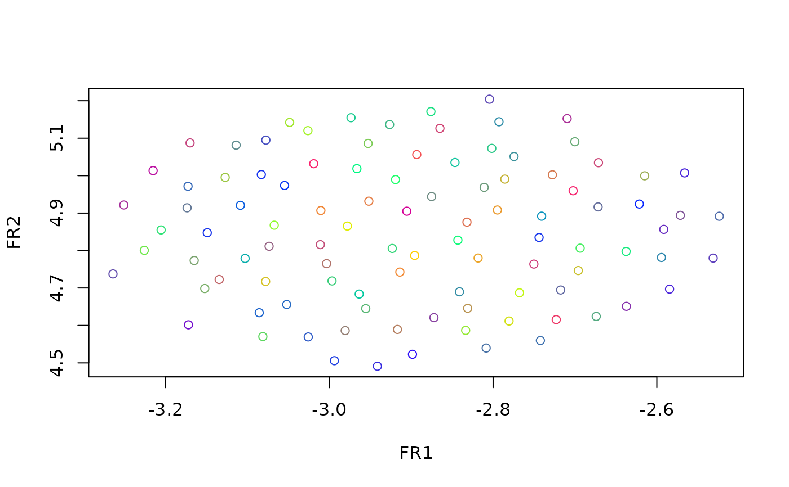

An S4 Class implementing the Fruchterman Reingold Graph Layout algorithm.
Slots
funA function that does the embedding and returns a dimRedResult object.
stdparsThe standard parameters for the function.
General usage
Dimensionality reduction methods are S4 Classes that either be used
directly, in which case they have to be initialized and a full
list with parameters has to be handed to the @fun()
slot, or the method name be passed to the embed function and
parameters can be given to the ..., in which case
missing parameters will be replaced by the ones in the
@stdpars.
Parameters
- ndim
The number of dimensions, defaults to 2. Can only be 2 or 3
- knn
Reduce the graph to keep only the neares neighbors. Defaults to 100.
- d
The distance function to determine the weights of the graph edges. Defaults to euclidean distances.
Implementation
Wraps around layout_with_fr, see there for
details. The Fruchterman Reingold algorithm puts the data into
a circle and puts connected points close to each other.
References
Fruchterman, T.M.J., Reingold, E.M., 1991. Graph drawing by force-directed placement. Softw: Pract. Exper. 21, 1129-1164. https://doi.org/10.1002/spe.4380211102
See also
Other dimensionality reduction methods:
DRR-class,
DiffusionMaps-class,
DrL-class,
FastICA-class,
HLLE-class,
Isomap-class,
KamadaKawai-class,
MDS-class,
NNMF-class,
PCA-class,
PCA_L1-class,
UMAP-class,
dimRedMethod-class,
dimRedMethodList(),
kPCA-class,
nMDS-class,
tSNE-class
Examples
if(requireNamespace(c("igraph", "coRanking"), quietly = TRUE)) {
dat <- loadDataSet("Swiss Roll", n = 100)
emb <- embed(dat, "FruchtermanReingold")
plot(emb, type = "2vars")
}
